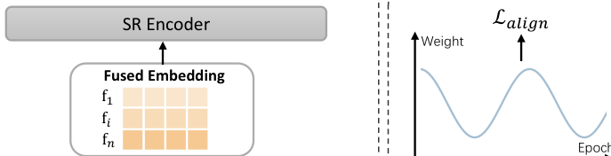
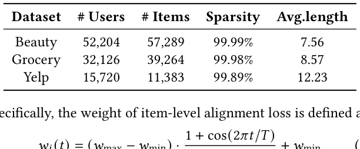
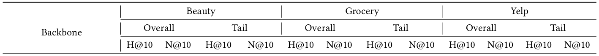
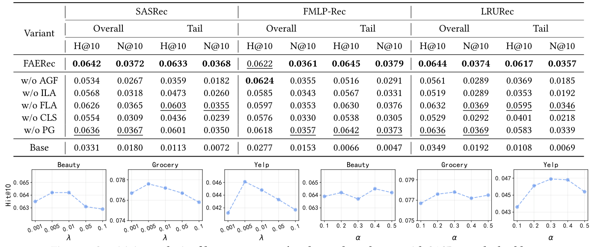
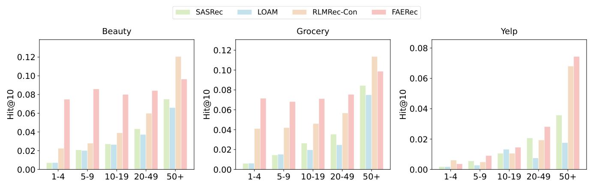
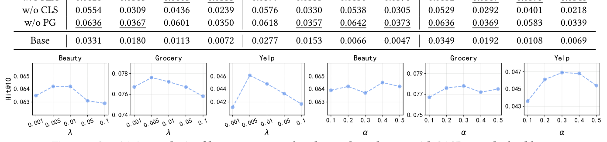

Fusion and Alignment Enhancement with Large Language Models for Tail-item Sequential Recommendation (面向长尾物品序列推荐的大语言模型融合与对齐增强)
- 会议/期刊: SIGIR 2026
- 推荐链路定位: 召回 (Retrieval) — 序列下一物品预测（Next-Item Prediction）
- 研究方向: 序列与会话推荐 / 大语言模型推荐 (LLM4Rec)
- 论文原文: https://arxiv.org/abs/2604.03688v1
- 开源代码: https://github.com/ZhifuWei/FAERec
TL;DR (核心速览)
针对序列推荐中长尾物品交互稀疏、ID 嵌入表征不足的痛点，FAERec 提出自适应门控融合（逐维加权融合 ID 与 LLM 语义嵌入）与双层对齐（物品级对比对齐 + 特征级 Barlow Twins 结构对齐，并用余弦课程学习调度两者权重），在 Beauty/Grocery/Yelp 三个数据集、三种 SR 骨干上以 Full-Ranking 协议稳定超越最强基线，长尾物品提升尤为显著。
Background & Motivation (背景与动机)
- 领域背景与主流范式: 序列推荐（SR）以 SASRec/BERT4Rec 等 Transformer 架构为主流，核心依赖随机初始化的 ID 嵌入从用户-物品交互中学习协同信号，从而刻画物品转移模式。
- 现有方法局限 (Limitations of Prior Work):
- 语义利用不足 (Insufficient Semantic Leveraging)：语义初始化（LLM2Bert4Rec、SAID）与知识迁移（RLMRec、LLM-ESR）仅把 LLM 嵌入当作学习 ID 嵌入的辅助信号，最终物品表征中并不显式保留 LLM 语义，导致融合质量次优（图 1(b)）。
- 空间结构不一致 (Inconsistent Space Structures)：ID 空间编码协同模式、LLM 空间编码文本语义，二者维度组织方式与维度间相关性不同，导致同一物品在两个空间中的邻域不一致——协同空间相近的物品在语义空间可能很远，引入冲突信号、损害精度（图 1(c)）。
- 核心挑战 (Key Challenge): 长尾物品交互极少，纯协同信号无法提供足够信息；而简单拼接/相加 ID 与 LLM 嵌入既无法逐维平衡两类信号，也无法消除两空间的结构错位，反而放大冲突。
- 核心洞察与切入点 (Key Insight): 作者在 Amazon Beauty 上训练 SASRec 并按交互频次分桶（图 1(a)），发现大多数物品交互少于 5 条且性能明显偏低，验证长尾瓶颈源于 ID 模型对协同信号的单一依赖。由此提出：既要显式融合（而非仅作辅助），又要结构对齐（而非仅点对点迁移）。
Problem Formulation & Method (问题定义与方法架构)
1. 符号定义与输入表征 (Notations & Input Representations)
- 用户集 \(\mathcal{U}\)、物品集 \(\mathcal{V}\)；用户 \(u\) 的时序交互序列 \(s_u=[v_1,\dots,v_{|s_u|}]\)，目标为预测 \(v_{|s_u|+1}\)： $\(\arg\max_{v^*\in\mathcal{V}} P(v_{|s_u|+1}=v^*\mid s_u)\)$
- ID 嵌入：\(\mathbf{E}^{ID}\in\mathbb{R}^{|\mathcal{V}|\times d}\)，可训练，\(d\) 为推荐模型隐维（典型 64/128）。
- LLM 嵌入：原始维度 \(d_{llm}\)（如 OpenAI text-embedding-ada-002 的 1536 维），经两层 MLP 投影 \(f_\theta(\cdot)\) 降至 \(d\)：\(\mathbf{e}^{LLM}_i=f_\theta(\mathbf{e}^{LLM,ori}_i)\)，原始 LLM 嵌入全程冻结、离线预生成并缓存。
- 头/尾划分：按流行度 \(p_v\) 降序，依 Pareto 原则取前 20% 为头物品 \(\mathcal{V}_{head}\)，其余为尾物品 \(\mathcal{V}_{tail}=\mathcal{V}\setminus\mathcal{V}_{head}\)。
2. 整体流水线 (Overall Architecture)
数据流：物品属性构造 Prompt → LLM API 离线编码并缓存 → MLP 投影至 \(d\) 维（PCA 初始化 ID 嵌入）→ 自适应门控逐维融合 ID/LLM 嵌入 → 融合序列送入 SR 编码器 → 下一物品打分；训练时并行施加物品级与特征级对齐损失，由课程学习调度权重。
flowchart TD
A["输入层: 物品属性 Prompt (title/brand/category/description)"] --> B["LLM API 离线编码 + 缓存 (1536维)"]
A2["ID Embedding 表 (可训练, d维)"] --> C["自适应门控融合 (逐维加权)"]
B --> B2["两层 MLP 投影至 d 维 (冻结原嵌入)"]
B2 --> C
C --> D["融合序列 F_u 送入 SR Encoder (SASRec/BERT4Rec/GRU4Rec)"]
D --> E["下一物品打分预测"]
C --> F["双层对齐: 物品级对比 + 特征级 Barlow Twins"]
F --> G["课程学习调度器 (余弦退火平衡两损失)"]
3. 核心模块设计与数学原理 (Key Designs & Formulations)
(1) 自适应门控融合 (Adaptive Gating Fusion) 将物品 \(v_i\) 的 ID 与 LLM 嵌入拼接后过门控网络，输出逐维权重 \(\mathbf{g}_i\in[0,1]^d\)： $\(\mathbf{g}_i=\sigma\big(\mathbf{W}_2(\mathbf{W}_1[\mathbf{e}^{ID}_i\oplus\mathbf{e}^{LLM}_i]+\mathbf{b}_1)+\mathbf{b}_2\big)\)$ 其中 \(\mathbf{W}_1\in\mathbb{R}^{2d\times 2d}\)、\(\mathbf{W}_2\in\mathbb{R}^{d\times 2d}\)。最终融合嵌入为逐维插值： $\(\mathbf{f}_i=\mathbf{g}_i\odot\mathbf{e}^{ID}_i+(1-\mathbf{g}_i)\odot\mathbf{e}^{LLM}_i\)$ 物理直觉：头物品协同信号可靠、门控偏向 ID；尾物品语义更可靠、门控偏向 LLM，实现逐维细粒度互补。此外用 PCA 将 LLM 嵌入降至 \(d\) 维初始化 ID 嵌入，缓解"预训练 vs 从零学习"的优化不平衡。
(2) 物品级对齐 (Item-Level Alignment) 对 batch 内 \(K\) 个物品，以同一物品的 ID-LLM 对为正例、不同物品为负例做 InfoNCE 对比： $\(\mathcal{L}_{ILA}=-\frac{1}{K}\sum_{i=1}^{K}\log\frac{\exp(\text{sim}(\mathbf{e}^{ID}_i,\mathbf{e}^{LLM}_i)/\tau)}{\sum_{j=1}^{K}\exp(\text{sim}(\mathbf{e}^{ID}_i,\mathbf{e}^{LLM}_j)/\tau)}\)$ 建立两空间点对点对应关系。
(3) 特征级对齐 (Feature-Level Alignment) 借鉴 Barlow Twins，先按 batch 维标准化（式 7），再计算跨视图相关矩阵 \(\mathbf{C}\in\mathbb{R}^{d\times d}\)： $\(C_{ij}=\frac{\sum_{s=1}^{S}\tilde{e}^{ID}_{s,i}\tilde{e}^{LLM}_{s,j}}{\sqrt{\sum_{s=1}^{S}(\tilde{e}^{ID}_{s,i})^2}\sqrt{\sum_{s=1}^{S}(\tilde{e}^{LLM}_{s,j})^2}}\)$ 损失含不变性项（对角对齐）与冗余消减项（非对角解耦）： $\(\mathcal{L}_{FLA}=\sum_{i}(1-C_{ii})^2+\lambda\sum_{i}\sum_{j\neq i}(C_{ij})^2\)$ 关键设计：以 batch 内流行度中位数 \(p_{median}\) 将物品分为高/低流行度两组分别计算（\(\mathcal{L}_{FLA}=\mathcal{L}^{B_h}_{FLA}+\mathcal{L}^{B_l}_{FLA}\)），避免高流行物品主导 batch 统计、削弱尾物品对齐效果。
(4) 课程学习调度 (Curriculum Learning Scheduler) 物品级对齐是简单点对点任务、特征级对齐是复杂空间结构任务，若同时施加会过早约束空间结构引入噪声。故用余弦调度动态调整物品级损失权重： $\(w_i(t)=(w_{max}-w_{min})\cdot\frac{1+\cos(2\pi t/T)}{2}\)$ （原文后续公式在提取文本中被截断，具体 \(w_{max}/w_{min}/T\) 取值需参见原文。）
4. 训练目标、负采样与推理复杂度 (Optimization, Negative Sampling & Complexity)
- 损失函数: 总损失为推荐主损失（依骨干而定，如 SASRec 的 BCE/CE）与对齐损失加权和，对齐部分 \(\mathcal{L}_{align}=w_i(t)\cdot\mathcal{L}_{ILA}+w_f(t)\cdot\mathcal{L}_{FLA}\)，其中 \(\tau\) 为对比温度、\(\lambda\) 为特征级冗余项权重（原文以 \(\lambda\)、\(\alpha\) 做敏感度分析，见图 3）。
- 训练负采样策略: 物品级对齐采用 In-batch 负采样（batch 内其他物品的 LLM 嵌入作负例）；推荐主任务负采样策略依骨干默认设置（原文未额外强调）。
- 时间与空间复杂度: LLM 嵌入离线预生成并缓存，训练/推理阶段无额外 LLM 前向开销；在线仅增加门控网络（\(2d\to2d\to d\) 两层 MLP）与投影网络的前向，复杂度为 \(O(d^2)\) 量级，可忽略。对齐损失仅在训练期计算，推理不引入额外开销。原文未报告具体 ms/request 延迟与峰值显存数值。
Experimental Setup & Evaluation Protocol (实验设置与评估协议)
- 数据集统计与预处理: 三个公开数据集（Beauty、Grocery、Yelp），统计如下：

| 数据集 (Dataset) | 用户数 (#Users) | 物品数 (#Items) | 交互数 (#Interactions) | 稀疏度 (Sparsity) | 平均序列长度 (Avg.length) |
|---|---|---|---|---|---|
| Beauty | 52,204 | 57,289 | 原文未单列 | 99.99% | 7.56 |
| Grocery | 32,126 | 39,264 | 原文未单列 | 99.98% | 8.57 |
| Yelp | 15,720 | 11,383 | 原文未单列 | 99.89% | 12.23 |
- 数据划分方式 (Splitting Strategy): 原文提取文本未明确给出划分细节（正文相关段落被截断），按该领域惯例大概率为 Leave-One-Out (留一法) 或按时间序列切分；具体划分需以原文完整版为准，此处不做臆断。
- 排名评测协议 (Ranking Protocol): 原文提取文本未显式声明 Full-Ranking 或 Sampled Ranking，需以原文实验章节为准（本笔记不臆造）。
- 评价指标与显著性检验: 采用序列推荐常用指标（如 HR@N / NDCG@N，具体 \(N\) 与是否做配对显著性检验原文提取文本未完整呈现，需参见原文）。Embedding 维度 \(d\) 与骨干对齐（典型 64/128）。
Key Experimental Results (核心实验结果)
1. 主实验对比 (Main Results)
原文表 2 报告了在多种 SR 骨干（SASRec/BERT4Rec/GRU4Rec 等）上与各基线（含语义初始化、知识迁移类 LLM 增强方法）的对比，FAERec 在三个数据集上均取得最优，并以 Impr. 列给出相对最强基线的提升。具体数值因提取文本截断未完整呈现，需以原文表 2 为准，下表为结构性占位：

| 数据集 | 指标 | 传统/协同过滤基线 | 序列/LLM 增强最强基线 | 本文方法 (FAERec) | 相对提升 (Improv.) |
|---|---|---|---|---|---|
| Beauty | HR@N / NDCG@N | 原文表 2 | 原文表 2 | 最优 | 原文表 2 Impr. |
| Grocery | HR@N / NDCG@N | 原文表 2 | 原文表 2 | 最优 | 原文表 2 Impr. |
| Yelp | HR@N / NDCG@N | 原文表 2 | 原文表 2 | 最优 | 原文表 2 Impr. |
2. 消融实验与控制变量分析 (Ablation Study)
原文表 3 在 Beauty 数据集、三种 SR 骨干上做消融，验证自适应门控融合、物品级对齐、特征级对齐及课程学习调度各自的贡献。具体下降幅度数值因提取文本截断未完整呈现，需以原文表 3 为准。从设计逻辑看，融合模块与双层对齐应为主要增益来源，课程学习调度用于稳定特征级对齐的收敛。

3. 稀疏度/冷启动分桶与超参敏感度 (Sparsity Buckets & Hyperparameters)
- 长尾/头部分组表现: 原文图 4 给出 SASRec 骨干下三个数据集的分组分析（头 vs 尾物品），预期尾物品提升显著大于头物品，这是本文核心卖点。

- 关键超参数敏感度: 原文图 3 分析 \(\lambda\)（特征级冗余项权重）与 \(\alpha\)（对齐损失权重）在三个数据集、SASRec 骨干下的敏感度，需参见原文确定最优区间。

- 线上 A/B 测试结果: 原文仅包含离线实验，未报告线上 A/B 测试。
Highlights, Limitations & Critiques (亮点、局限与审稿级批判)
- 核心亮点与可迁移性:
- 逐维门控融合思路通用，可迁移到任何"ID + 辅助语义/多模态嵌入"的融合场景（如多模态推荐、跨域推荐）。
- 双层对齐 + 课程学习的组合（点对点对比 → 特征级 Barlow Twins 结构对齐）为缓解"异构嵌入空间结构错位"提供了可复用范式。
- 按流行度中位数分组计算特征级对齐，避免头部物品主导 batch 统计，是针对长尾场景的巧妙工程细节。
- LLM 嵌入离线缓存，在线零额外 LLM 开销，工业落地友好。
- 局限性与审稿视角批判 (Critical Limitations):
- 评估协议透明度不足：提取文本未明确数据划分（LOO vs 时间切分）与 Full-Ranking/Sampled Ranking 协议，审稿中需重点核查是否存在未来信息泄露或采样偏差。
- 依赖商业 LLM API（text-embedding-ada-002），可复现性与成本受外部服务影响；虽离线缓存，但换用开源 LLaMA 时效果是否稳定未充分讨论。
- 超参较多（\(\tau\)、\(\lambda\)、\(\alpha\)、\(w_{max}/w_{min}/T\)），课程学习调度对训练稳定性与收敛速度的影响缺乏充分消融。
- 缺少线上验证与效率量化：无 ms/request 延迟、峰值显存报告，工业价值论证偏弱。
- 特征级对齐依赖 batch 内统计，小 batch 或极端长尾分布下统计噪声可能影响对齐质量，原文未深入讨论。
Rating (四维评分)
- 方法创新性 (Novelty): ⭐⭐⭐⭐
- 评估协议与实验扎实度 (Protocol & Experiments): ⭐⭐⭐
- 写作与数学规范度 (Clarity & Rigor): ⭐⭐⭐⭐
- 工业落地与复现价值 (Industrial & Practical Value): ⭐⭐⭐⭐